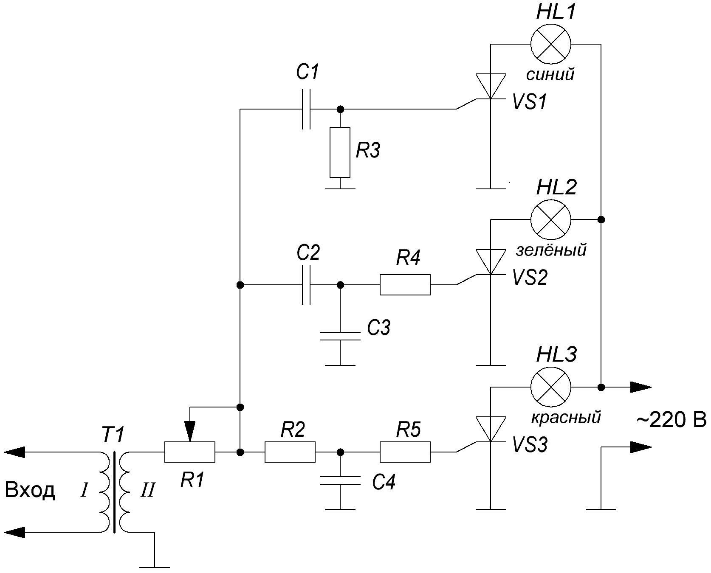
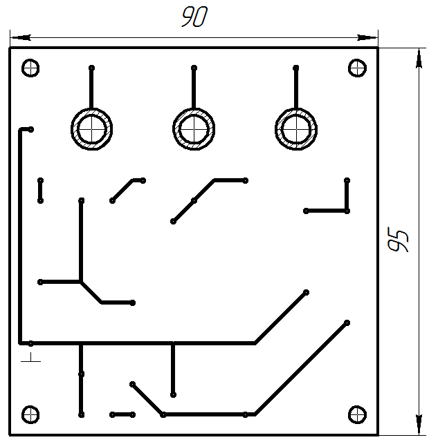
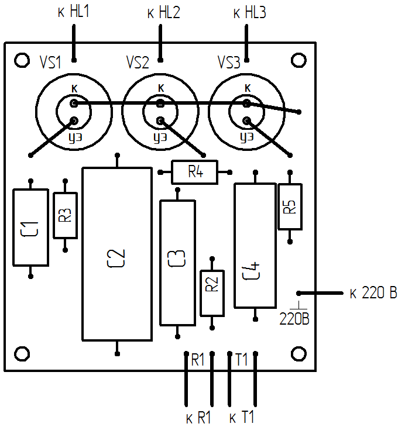

Цветомузыкальная установка на лампах накаливания (вариант 1)
Устройство питается сетевым напряжением! Будьте внимательны и осторожны! Все подключения и перепайки производите только при выключенном устройстве!
Из схемы (рис. 1) видно, что устройство питается сетевым напряжением. Чтобы обезопасить эксплуатацию устройства, на входе стоит трансформатор который выполняет двойную функцию:
- создаёт гальваническую развязку от сети,
- повышает уровень входного сигнала.

Таблица 1
| Обозначение | Наименование | Номинал | Примечание |
|---|---|---|---|
| С1 | Конденсатор | 0,1 мкФ / 160 В | |
| С2 | Конденсатор | 1 мкФ / 250 В | |
| C3 | Конденсатор | 0,25 мкФ / 160 В | |
| C4 | Конденсатор | 0,5 мкФ / 160 В | |
| HL1 - HL3 | Лампа накливания | 100 Вт / 220 В | HL1 - синий, |
| R1 | Резистор переменный | 10 кОм | |
| R2 | Резистор постоянный | 1,2 кОм / 1 Вт | |
| R3 | Резистор постоянный | 10 кОм / 1 Вт | |
| R4 | Резистор постоянный | 680 Ом / 1 Вт | |
| R5 | Резистор постоянный | 560 Ом / 1 Вт | |
| T1 | Трансформатор | повышающий | |
| VS1-VS3 | Тринистор | КУ202Н |
В качестве трансформатора подойдёт трансформатор от абонентского громкоговорителя. При самостоятельном изготовлении трансформатора необходимо снять старые обмотки от малогабаритного трансформатора и намотать новые проводом диаметром 0,2 мм. Первичная обмотка содержит 100 витков провода, вторичная - 500 витков. Между первичной и вторичной обмотками надо намотать слой изоляции (бумажная лента, лакоткань). После сборки необходимо проверить трансформатор на отсутствие замыкания между первичной и вторичной обмотками.
Источником света служат лампы накаливания мощностью 100 Вт и напряжением 220 В. К каждому каналу устройства можно подключить до 500 Вт нагрузки. Если поставить тиристоры на радиаторы мощность нагрузки может быть 1000 Вт.
В качестве трансформатора можно использовать малогабаритный трансформатор от сетевого блока питания. Сетевая обмотка подключается к фильтрам, а на низковольтную подаётся входной сигнал.
Достоинства данного устройства:
- простота,
- надёжность,
- хорошая повторяемость,
- не требует наладки при условии применения исправных деталей.
Недостатки;
- низкую чувствительность,
- мерцание ламп во время работы,
- зависимость работы устройства от громкости звука.
Последний недостаток можно устранить поставив на вход собственный усилитель.

